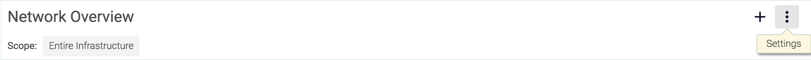

Configure Dashboards
Contents
Create a New Dashboard
Create a Dashboard from the Explore Tab
To create a dashboard from the Explore tab:
Click the
Settings(three dots) icon for either the current dashboard, or for a panel within the dashboard:
Select either
Copy to Dashboard, orCopy Panel, depending on the icon selected in step one
Define the name of the new dashboard, and click the
Copy and Openbutton to save the new dashboard.
Create a Dashboard with the Wizard
To create a dashboard with the Dashboard Wizard.
On the
Dashboardstab, click theAdd Dashboardbutton.
Note
Sysdig provides a number of pre-built dashboards, designed around various supported applications, network topologies, infrastructure layouts, and services. These can be used to jumpstart the dashboard building process, as templates for further configuration.
Pre-built dashboards come with a series of panels already configured, based on the information most relevant users. The example below uses the
Network Overviewdashboard template:
The default dashboard includes number panels for total, in network, and out of network bytes, and line graphs comparing in network and out of network bytes, as well as byte usage by application/port, process, and by host.
Select either a pre-built dashboard, or select
Blank Dashboardto create one from scratch.Define the name of the dashboard, and click the
Create Dashboardbutton.
The new dashboard will now be added to the side panel under My Dashboards, and is ready for configuration.
Configure Dashboard Layout
Configure Fullscreen
To view the current dashboard in fullscreen mode:
Click the Settings (three dots) icon for the dashboard, and select the
Fullscreenoption: Note
Dashboards cannot be configured in fullscreen mode - they are read-only, until fullscreen mode is exited.
To exit fullscreen mode, either press the
ESCkeyboard key, or click theExit(cross) icon.
Configure Panel Size
Configure Individual Panels
The size of individual panels can be altered by moving the mouse cursor over the bottom right corner of a panel, until the diagonal resize cursor appears, pressing and holding the left mouse button, and increasing or decreasing the size of the panel by moving the cursor while pressed. The changes can be saved by clicking the Save Layout link, or reverted by clicking the Revert Changes link.
Configure All Panels
To configure the size of every panel in the dashboard:
On the
Dashboardstab, select the relevant dashboard from the left-hand panel.Click the
Settings(three dots) icon for the dashboard.Select
Layoutto open the drop-down menu.Select the desired panel size.
If the new size is correct, click the
Save Layoutlink. Otherwise, selectRevert Changes.
Note
Configuring this setting overrides all custom panel sizes.
Move Panels
To move a panel to a new position in the dashboard, move the mouse cursor over the top of the panel, until the hand cursor appears. Press and hold the left mouse button, and move the panel by moving the cursor while pressing the button. The changes can be saved by clicking the Save Layout link, or reverted by clicking the Revert Changes link.
Delete a Dashboard
To delete an existing dashboard:
On the
Dashboardstab, select the relevant dashboard from the left-hand panel.Click the
Settings(three dots) icon for the dashboard.Select
Delete Dashboard.Click the
Yes, Delete Dashboardbutton to confirm the change.